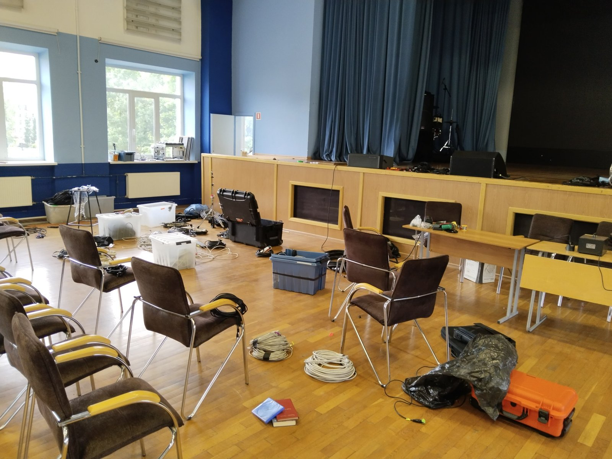
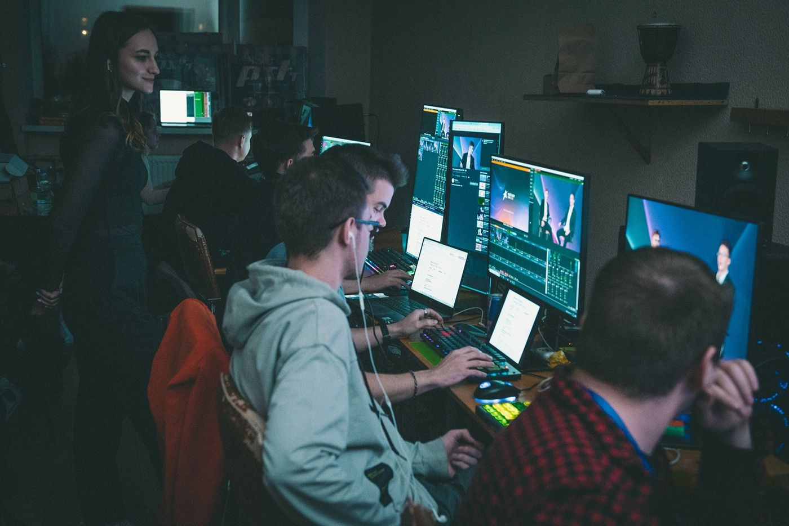
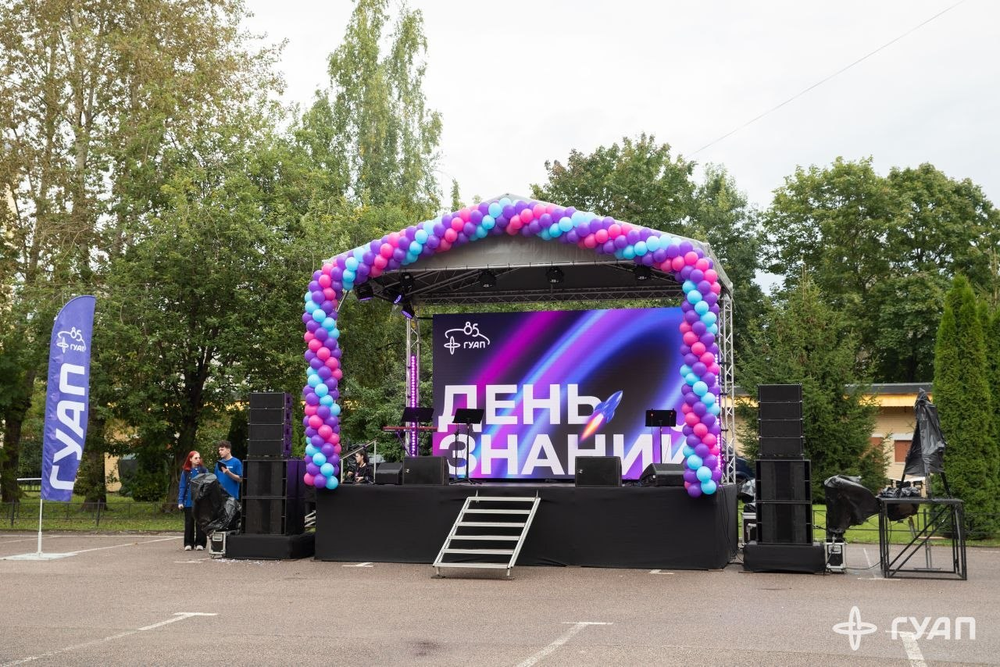

Трансляции:
зачем и с чем едят
ТЕХ ГУАП
Студия технического обеспечения мероприятий. Делаем так, чтобы зритель видел и слышал «магию» — а техника оставалась невидимой.
Звук
Площадка, микшер, микрофоны
Свет
Атмосфера и приборы
Видео
Экраны, проекторы, контент
ПТС
Камеры, эфир, стрим, запись

Что такое ПТС
Передвижная телевизионная станция — вся цепочка, которая увозит событие за пределы зала.
Куда уходит картинка
- Прямой эфир — VK, YouTube и другие платформы
- Онлайн‑встреча — Zoom, TrueConf и похожие сервисы
- Запись — архив, нарезки, отчётность
- Удалённый зал — трансляция в другое помещение
Кто мы в кадре
- Мы не видеооператоры
- Иногда выходим видеооператорами на эфир
- С камерами работаем не хуже видеооператоров — понимаем кадр, свет, экспозицию
- Наша суперсила — связать камеру, сигнал, микшер и доставку
Что делаем руками
- Собираем схему эфира и коммутацию
- Поднимаем микшер, графику, звук в программу
- Следим за качеством сигнала до зрителя
Зачем это студии
- Мероприятие живёт дольше, чем зал
- Есть контроль и ответственность за эфир
- Реальный опыт продакшна, а не только теория
Зачем нужны трансляции
Доступность
Событие видят те, кто не попал в зал. Live сейчас — и архив потом.
Расширение аудитории
Эфир выносит мероприятие за стены площадки: университет, город, партнёры, выпускники.
Удалённые команды и конференции
Когда спикеры и слушатели в разных городах, трансляция — единственный общий «зал»: переговоры, форумы, гибридные сессии.
Качество самого события
Контроль картинки и звука, фиксация «как было», отдельный продукт рядом с живым залом.
Какими бывают трансляции
Онлайн‑эфир
Концерты, конференции, церемонии — картинка уходит в сеть в реальном времени.
Гибрид
Зал + удалённые спикеры и зрители. ВКС, задержки, аккуратная маршрутизация.
Запись / IMAG
Фиксация на диск, показ на экранах зала, материалы без обязательного стрима.
Студийная
Подкасты, интервью, ток‑шоу — контролируемый свет, звук и фон.
Однокамерная и многокамерная
1 камера
Простой эфир, лекция, фиксация. Минимум постов, максимум дисциплины кадра.
Много камер
Режиссёр переключает планы в эфире: общий, средний, детали, реакция зала.
Что нужно для трансляции
Базовый пайплайн от сцены до зрителя. Каждый шаг — по нажатию.
Источник
Камеры, ПК, презентации, графика
Сигнал
Кабели, конвертеры, матрицы
Микшер
vMix / пульты, переключения
Доставка
RTMP / SRT / NDI, стрим
Зритель
Платформа, экран, архив
Железо
То, без чего эфир не встанет на ноги.
Камеры
Точки съёмки, штативы, сигнал в тракт. Кадр начинается здесь.
Коммутация
Кабели, сплиттеры, матрицы, конвертеры — путь сигнала без сюрпризов.
Микшер
Железный или программный пульт: куда что входит и что уходит в эфир.
Софт
Программы и материалы, которые собирают картинку в продукт.
Микшер и эфир
- vMix — наш основной программный микшер
- Входы / выходы, стрим, запись
- Слои, маршруты, триггеры
Контент в эфире
- Титры, бамперы, стингеры
- Презентации и заставки
- Подготовка до эфира и «пожарные» варианты
Кодеки и доставка
- Запись: mp4, ProRes и компания
- Доставка зрителю: RTMP, SRT…
- ВКС: WebRTC и схемы MCU / SFU
Сети и стандарты
- NDI, Dante, SMPTE и «по кабелю»
- Понимание, чем сигнал едет
- Где узкое место — и как его обойти
Люди на трансляции
Выпускающий режиссёр
Отвечает за эфир целиком: готовность, тайминг, финальное «можно в эфир».
Режиссёр трансляции
Решает, что в программе. Переключения, темп, крупности, реакция на сцену.
Инженер ПТС
Коммутация, сигналы, железо, стрим — чтобы всё работало.
Оператор
Строит кадр, держит фокус, слушает команды. Мы иногда закрываем этот пост сами.
Виджей трансляции
Графика в эфире: слои, переходы, визуальный ритм программы.
Звук / продюсер
Чистый звук в программу и связь с органами по сценарию события.
Где мы работаем

Актовый зал
Крупные мероприятия и полноценные эфиры.
Большая площадка

ПТСКА
Наша рабочая зона: сборка, учебка, железо.
Домашняя база

Внешние площадки
Выезды: типовые схемы, быстрый разворот, полевые условия.
Внешние эфиры
О чём пойдёт речь
Короткая карта вводного: от смысла эфира до того, как устроен курс дальше.
Смысл и форматы
Зачем нужны трансляции и какими они бывают
Пайплайн эфира
Источник → сигнал → микшер → доставка → зритель
Железо, софт, люди
Из чего собирается трансляция и кто за что отвечает
Дальше по курсу
Инженерные и режиссёрские темы — без жёсткого деления
Чему учимся дальше
Деление условное: темы пересекаются, жёстких «ты только инженер / только режиссёр» нет.
Сигнал, железо, сети
- Сигналы и коммутация
- Оборудование и стандарты по кабелю
- Кодеки, контейнеры, доставка
- vMix: входы, маршруты, стрим
- Сети: NDI, Dante, SRT, RTMP
- Типовые схемы и «нулевая» трансляция
Кадр, монтаж, эфир
- Монтаж в трансляции vs пост
- Построение кадра и крупности
- Операторские приёмы
- Свет, цвет, ритм программы
- Камера: экспозиция, фокус, штатив
- Дизайн в эфире и работа с контентом
Плюс менеджмент эфира: ТЗ, сценплан, зоны ответственности, заказчики — это общий слой для обеих веток.
Как проходит обучение
Лекции
Теория: режиссура, сигналы, кодеки, сети, дизайн.
Практики
Коммутация руками, vMix, камера, типовые схемы.
Нулевая трансляция
Эфир «с нуля» — проверка, что всё сложилось.
Цель курса — не сдать теорию, а уметь поднять трансляцию.
Трансляции — вводное занятие
ПТС делает событие видимым за пределами зала. Кратко, что разобрали:
Смысл и форматы
Зачем нужен эфир, какие бывают трансляции — от live и гибрида до записи и мультикамеры.
Пайплайн
Источник → сигнал → микшер → доставка → зритель. Базовая цепочка любого эфира.
Железо, софт, люди
Камеры и коммутация, vMix и контент, роли на смене — кто собирает картинку.
Курс дальше
Инженерные и режиссёрские темы без жёстких рамок — плюс практика и нулевая трансляция.